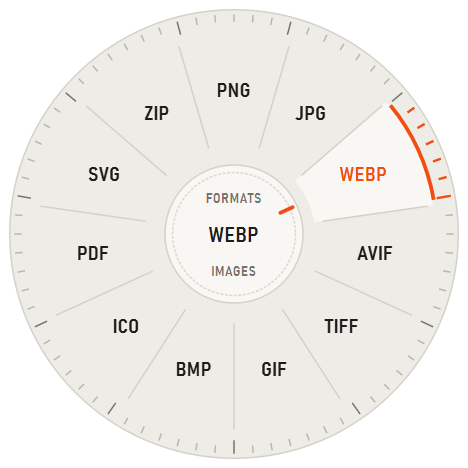
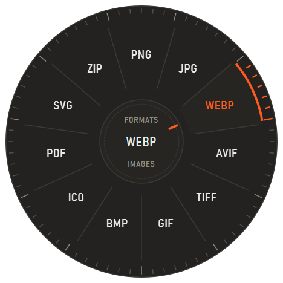
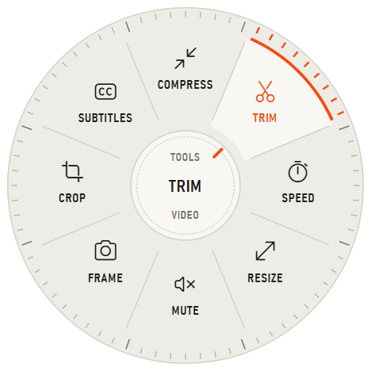
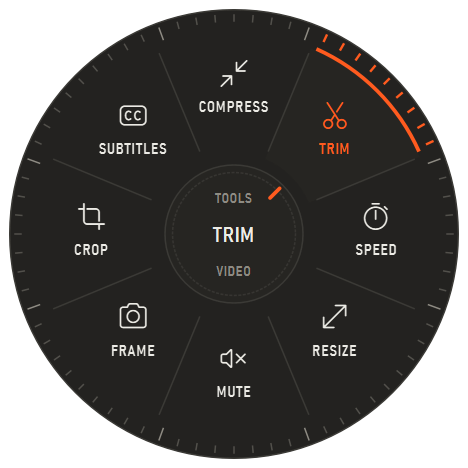
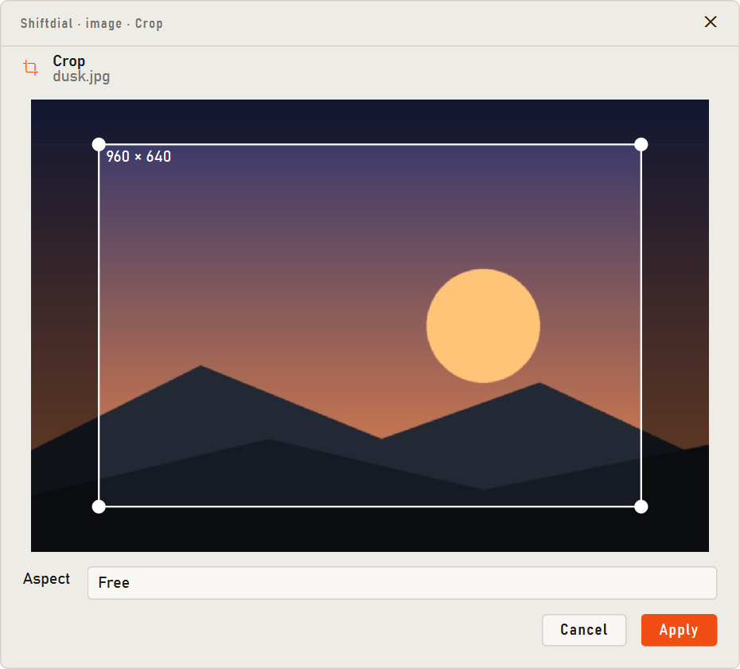
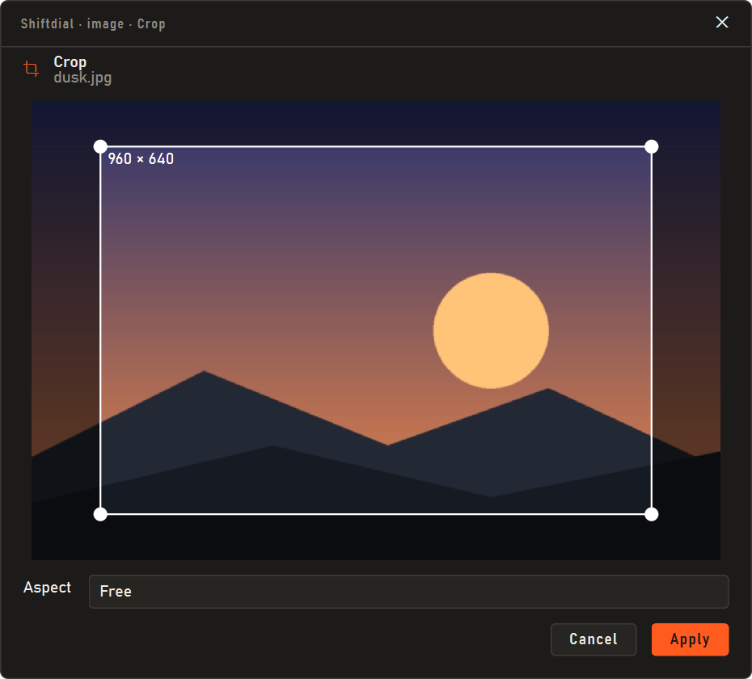
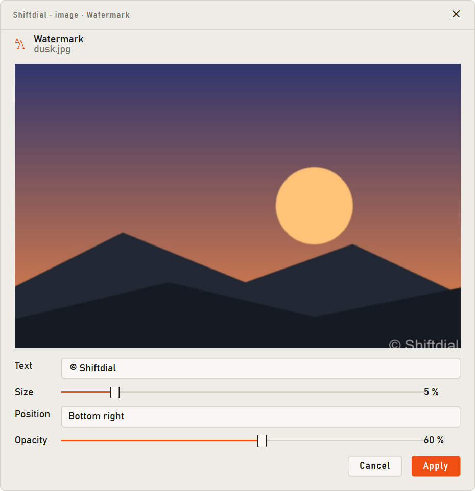
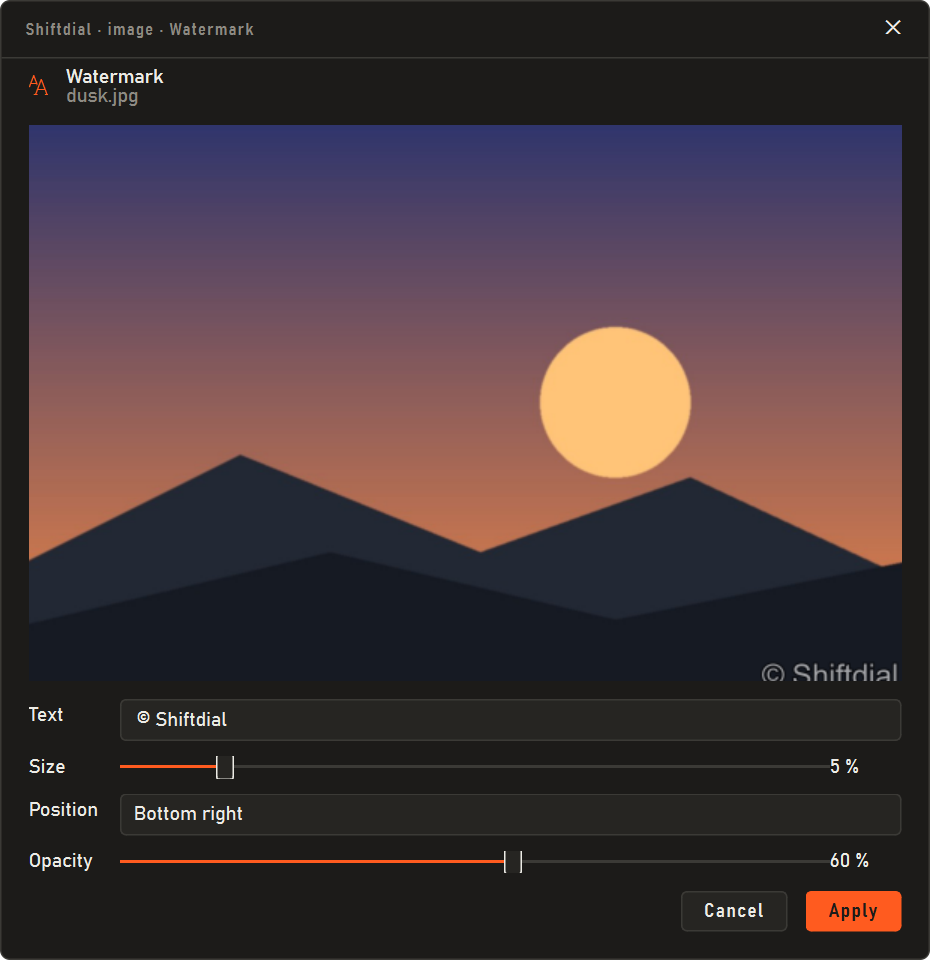
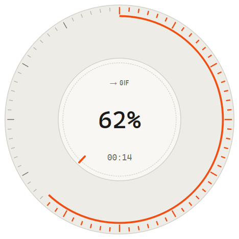
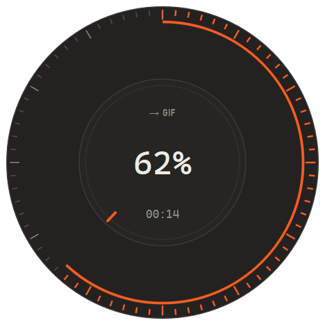

A file converter for Windows. A dial of formats opens under your cursor while you drag. Let go on one and the converted file appears next to the original. No app to open, no upload.
Windows may say “Windows protected your PC” because the app isn't signed yet: click More info, then Run anyway. Shiftdial then waits in the tray.


Shiftdial sits in the tray and waits for a drag that starts in Explorer.
Pick up one file or fifty in Explorer or on the desktop, the way you'd move them.
The dial opens with only the formats that make sense. Ctrl+Shift gives tools instead.
The dial becomes a gauge and counts to 100. The new file lands beside the old one.


Trim a clip with a preview, crop a photo to 16:9, compress a video to fit a 25 MB limit, merge PDFs, pull the subtitles out of a film, extract a password-protected RAR. Tools that need settings open one small window, then get out of the way.




After the drop the knob grows into a gauge: the scale fills, the needle turns, the percent counts up. Click it when it reads saved to open the folder. Nothing is ever overwritten, and a cancelled job leaves nothing behind.


| From | To |
|---|---|
| Images, incl. HEIC, AVIF, PSD and camera RAW | PNG, JPG, WEBP, AVIF, TIFF, GIF, BMP, ICO, PDF, SVG |
| Video: MP4, MOV, MKV, WEBM, AVI, … | MP4, HEVC, AV1, WEBM, MKV, MOV, AVI, GIF, APNG, MP3 |
| Audio: MP3, FLAC, WAV, M4A, OPUS, … | MP3, M4A, AAC, OPUS, OGG, FLAC, WAV, AIFF, ALAC, WMA |
| Images per page, text, CBZ, Word | |
| Word, Excel, PowerPoint, OpenDocument | PDF and each other, CSV and JSON from sheets, slides as images |
| Markdown, HTML, text | PDF, Word, HTML, Markdown |
| E-books: EPUB, MOBI, AZW3, FB2 | PDF, text |
| Archives: ZIP, 7Z, RAR, TAR, ISO | Extract, or repack as ZIP, 7Z, TAR.GZ |
| Data: JSON, YAML, TOML, XML | Each other, CSV, XLSX |
| Subtitles, fonts, 3D models, DXF drawings | SRT/ASS/VTT, TTF/WOFF2, STL/OBJ/GLB, PDF/SVG |
Office documents convert through the Microsoft Office you already have, or LibreOffice.
No account, no upload, no telemetry, no network calls at all.
New files get a new name. Drops are always a copy, never a move.
It only reads the mouse and Shift, so the cursor never lags.
Plain Python. Build it yourself with one script.
Windows 10 or 11 and 64-bit Python 3.12.
py -3.12 -m venv .venv .venv\Scripts\python -m pip install -r requirements.txt .venv\Scripts\python -m shiftdial.main